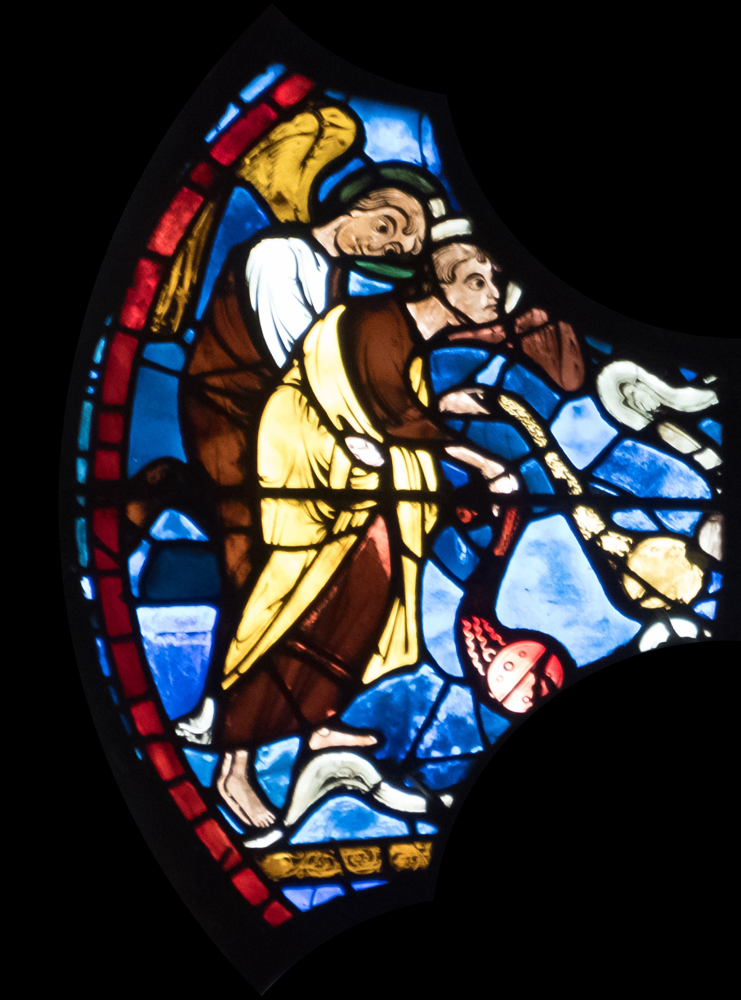
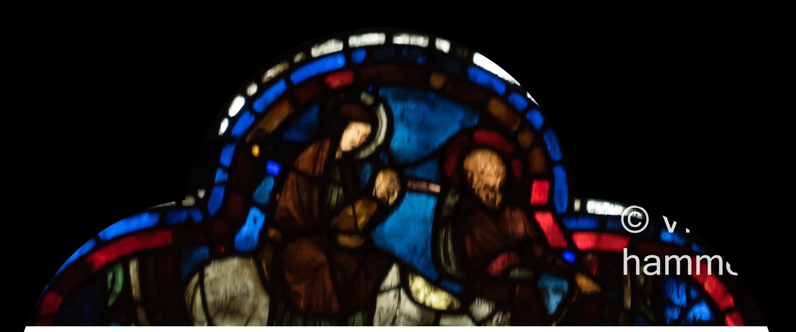

Date: c. 1215–1225
Patron: Unknown (possibly ironworkers or armorers)
Restoration: Some panels show evidence of 19th-century restoration; details uncertain
Attribution: Based on documentation by Jean Villette and the Corpus Vitrearum; images © Vincent Hammer; source: cathedrale-chartres.org
|

Angels Await John's Arrival
The beloved disciple has died; angels in heaven prepare to receive him with songs of glory. |
John Welcomed into Heaven
At the window's peak, two angels receive John with open arms into eternal life. |
Heavenly Benediction
Four incense-bearing angels bless the death of John, the beloved apostle, with fragrance and song. |
|
Miracle of Gold and Gems
John blesses a bundle of sticks and pebbles, transforming them into gold and jewels for the doubting Atticus and Eugène. |
Mystical Death of Saint John
John lies in a glowing sarcophagus, symbolizing his peaceful death and entrance into heavenly glory. |
At the Moneychanger's Shop
One youth presents the miraculous gold to a moneychanger, who tests its purity amid piles of silver and coin. |
|
Craton Commands the Destruction of Jewels
The philosopher Craton orders two brothers to smash their gemstones in a public display of false detachment. |
Christ Appears to John
The risen Christ invites the aged Apostle to join him, though John is asked to wait until Sunday. |
Miracle of the Reconstituted Jewels
John restores the shattered jewels by prayer, prompting Craton and the brothers to convert in awe. |
|
John Giving Alms
John gives alms to the poor, showing his compassion. |
Poison Tested on the Condemned
Two men lie dead from poisoned wine intended for John, who prepares to drink with divine assurance. |
The Raising of Drusiana
A witness gestures in awe as Drusiana is raised, prompting the crowd to proclaim faith in John's God. |
|
Exile to Patmos
Under persecution by Emperor Domitian, John sets sail for Patmos in exile, accompanied by two sailors. |
Trial Before the High Priest
John stands before Aristodemus, the Roman high priest, who condemns him to drink poison after the Apostle topples an idol of Diana. |
John Writing the Apocalypse
Seated at a lectern on Patmos, John writes his eschatological visions, framed by seven stylized towers symbolizing the Seven Churches of Asia. |
|
John in the Workshop of the Armorer
Two craftsmen labor in an armorer’s workshop. One, seated and calm, holds a shield or radiant mold, while another chisels nearby. John’s presence among the artisans may signal his spiritual confrontation with worldly craftsmanship or idolatry. |
Death of Stacteus
Stacteus lies on his deathbed while mourners weep, and two demons seize his departing soul — a prelude to John's miracle of resurrection. |
Crafting Stirrup in the Forge
Two armorers shape and finish stirrups beside a chimney, likely honoring Saint John as protector against the dangers of fire. |
|

Saint John Writing the Apocalypse
John writes the visions of Revelation on Patmos. |